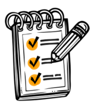
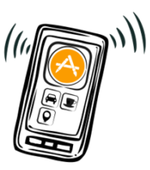
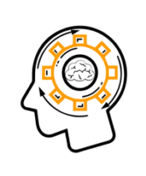
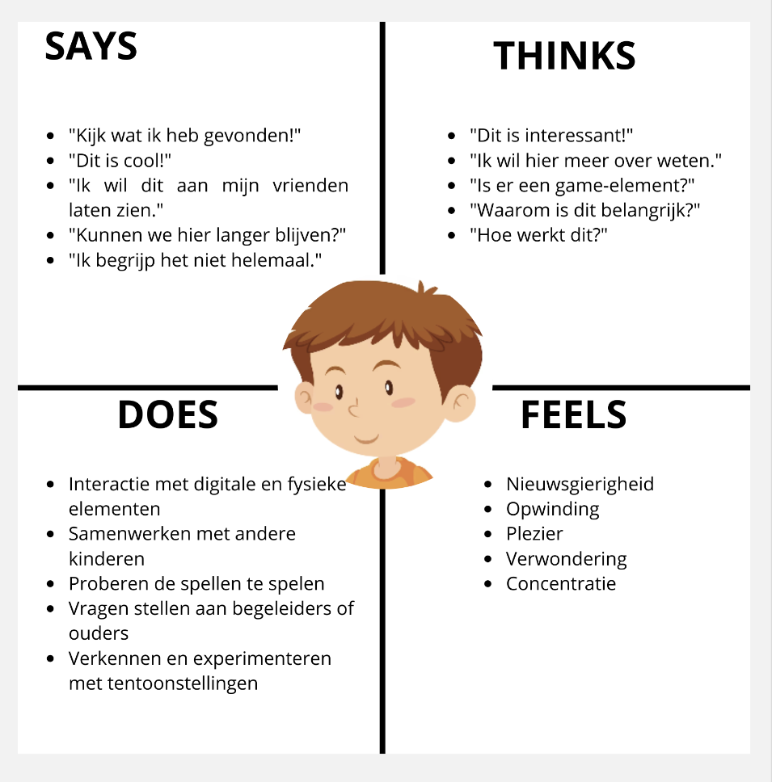
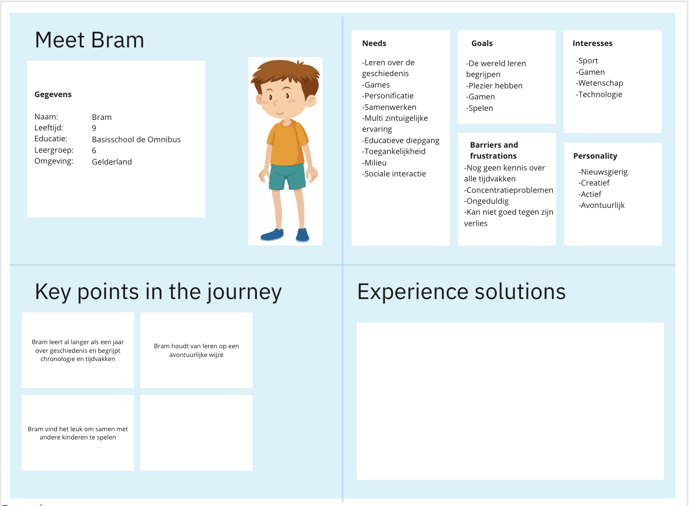
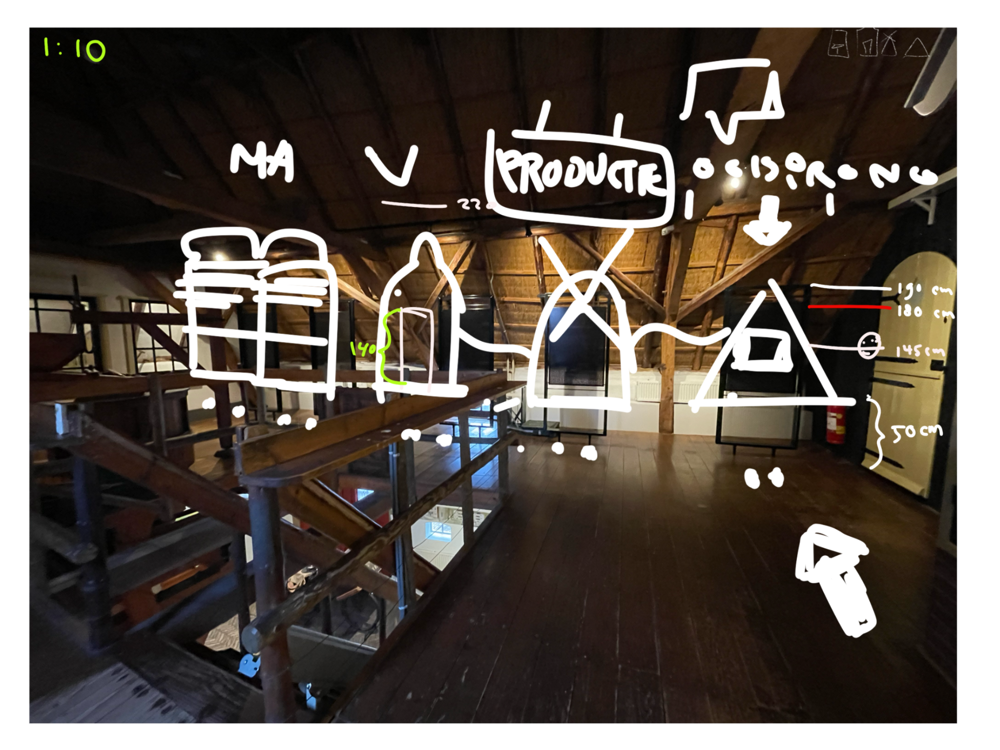
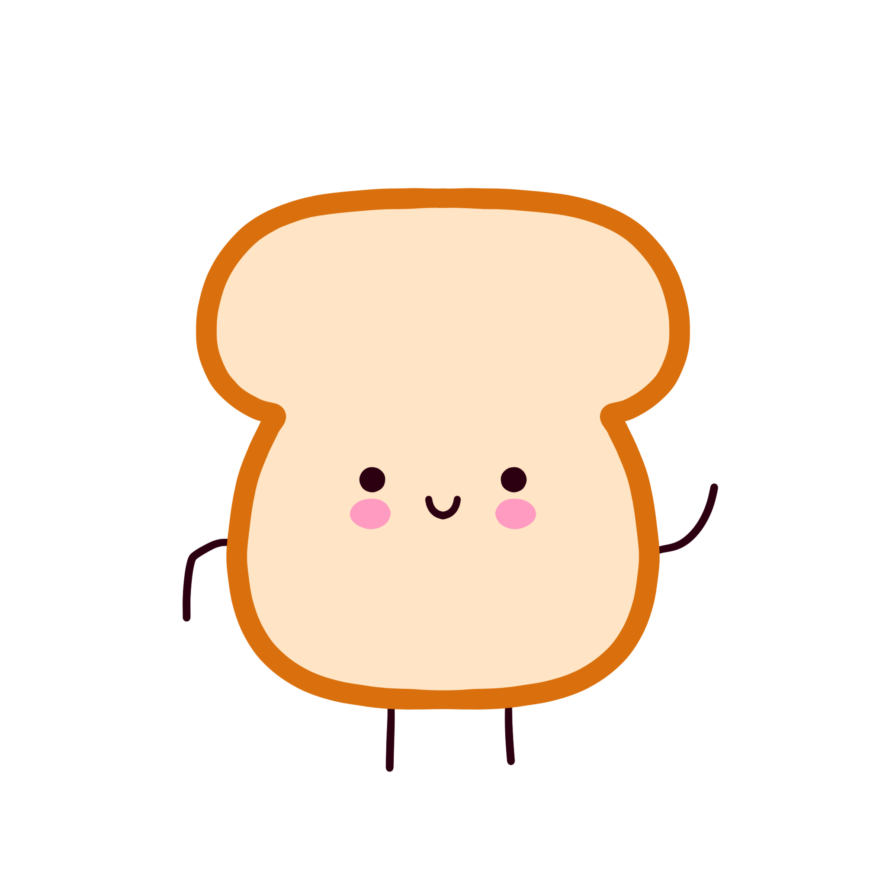
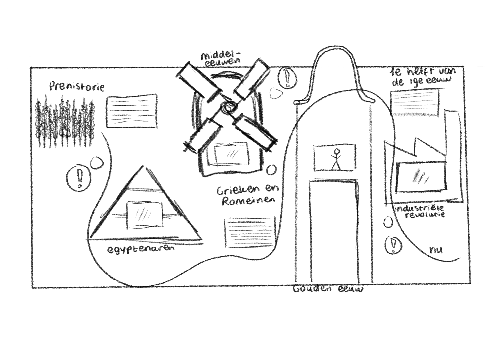
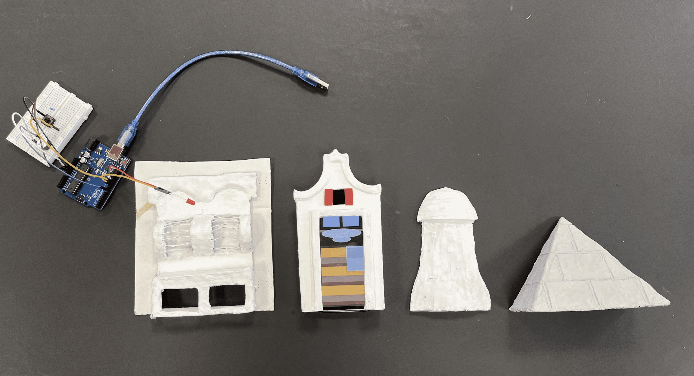
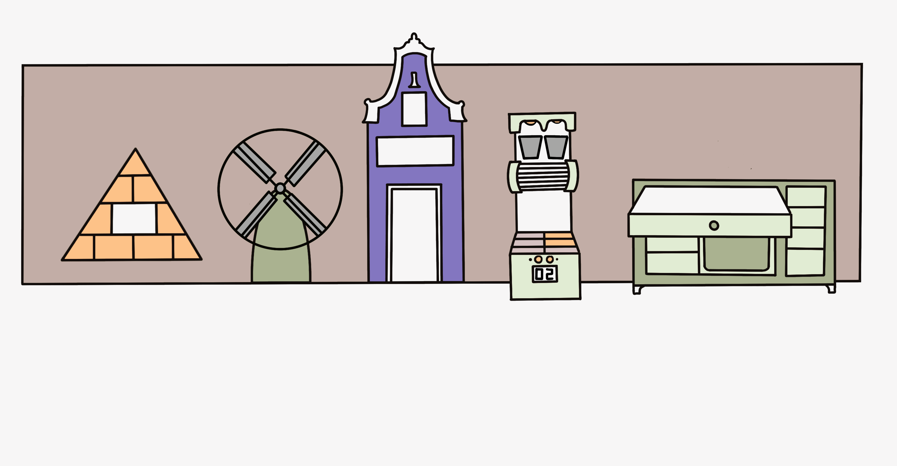

A timeline children play, not read
An interactive, physical-digital timeline with mascot Belly the Bun, taking children aged 9–10 through the history of baking.
- Role: UX/UI Designer
- Duration: 5 months
- Team: 3 students
- Tools: Figma, Miro, Arduino
Introduction
Together with two fellow students, I worked on a school assignment to improve the timeline at the Bakkerijmuseum (Bakery Museum) in Hattem. The museum believes it is important for children to learn about history, craftsmanship and heritage at a young age, and to become curious about it. The existing timeline consisted mainly of long text panels, so children quickly lost interest. The museum therefore wanted a playful way to make this heritage accessible and appealing.
Context & Challenge
Children quickly lose interest in long, static panels. The challenge: make the timeline understandable and playful without losing content. We explored both digital and physical interactions to design a natural, active learning experience.
Objective
The goal of this project was to make the timeline of the Bakery Museum Hattem more accessible and appealing to children (9–10 years), by combining information with short, playful tasks that hold their attention and spark curiosity.
Target audience
Children with or without accompanying adults. They want to discover things themselves, enjoy physical activity and role play, and lose interest when explanations are too long or not interactive.
Design question
How can the Bakery Museum Hattem make sure its informative timeline captures and holds the attention of children?
Design Thinking
For this project we applied the Design Thinking method, because it offers a structured yet flexible approach to complex challenges. The process consists of five phases: Empathize, Define, Ideate, Prototype and Test, with the children at the centre throughout. By working iteratively, insights from research could be translated directly into designs and prototypes, which were tested and refined again and again.
Empathize

Define
Ideate

Prototype

Test
Research
The project started with short observations and conversations with children and their accompanying adults, complemented by a co-reflection session in which ideas, expectations and frustrations were gathered. The focus was on attention span, the need to move, how understandable the information was and the role of rewards/feedback.
- Short chunks: children benefit from clear, bite-sized information.
- Physical actions: pressing, turning and collecting increase motivation.
- Visual style: too much text or a style that is too childish makes them drop out.
- Accompanying adults: the design must also be clear for them.
Empathy map

Persona

Steps towards the solution
Visiting the museum
Our process started with a visit to the Bakery Museum. We observed the space, measured heights and walking routes and made notes directly on site. This gave us insight into what was practically possible for placing interactive elements.

Prototype: Belly the Bun
A central element of our design became Belly the Bun, a child-friendly mascot that returns in every game. Belly introduces the task, briefly explains what needs to happen and asks the children for help — so children are actively involved and always have a familiar, playful starting point.
Belly keeps the tasks accessible and clear, while also challenging children to keep playing and exploring. This approach replaced our earlier idea of the baker's glove, because Belly was a better fit for the target audience.

Lo-fi sketches

During the lo-fi sketching phase we explored how Belly the Bun could be placed in the interactive timeline. The sketches show how each historical period got a short task:
- Egypt: Belly shows how pharaohs handed out bread.
- Middle Ages: turn the mill and Belly explains what happens inside.
- Golden Age: help Belly decorate the bakery's shop window.
- Industry: a race against the conveyor belt with Belly cheering you on.
- Today: a quiz in which Belly challenges children to prove their knowledge.
These lo-fi sketches let us quickly check whether Belly's role was clear and whether the games fit the available space and the target audience.
Result & impact

The final result is an interactive, physical-digital timeline that guides children aged 9–10 through the history of baking in a playful way. Instead of long, static panels, we use short activities that give direct feedback.
Children can get started on their own, but accompanying adults are also invited to join in. This makes the experience not only educational but also something to share.

The timeline meets the following quality standards:
- Attractive & clear: bite-sized information, supported by sound, animation and colour.
- Independent & intuitive: children can complete tasks themselves without much explanation.
- Interactive & playful: mini-games and short tasks turn learning into a game-based experience.
- Challenging but short: activities don't last too long and hold attention.
- Practical & expandable: a modular design that can easily be extended with new periods or installations.
Testing & next steps
During the project we mainly tested along the way: with the lo-fi sketches we quickly checked whether Belly's role was clear and whether the games fit the space and the target audience. The focus of this school project was on research, concept and a working prototype.
As a next step, I would test the timeline in the museum with children aged 9–10 and their accompanying adults. I would look at:
- Do children understand Belly's task without help from an adult?
- Do they finish the activities, and how long do they stay engaged?
- Do they remember something about the history of baking? I would measure this with a few short questions afterwards.
- Do accompanying adults join in, and is the timeline clear for them too?